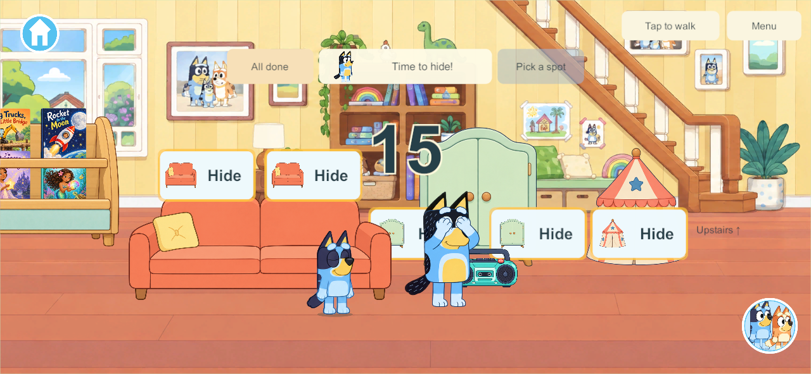
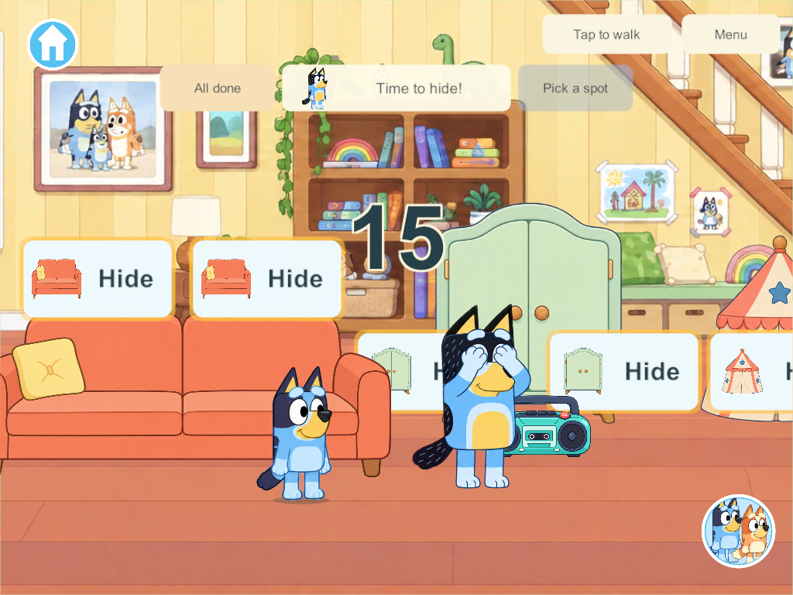
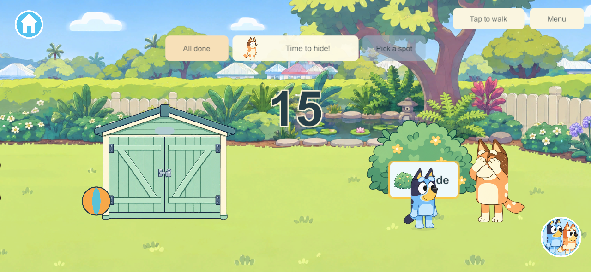
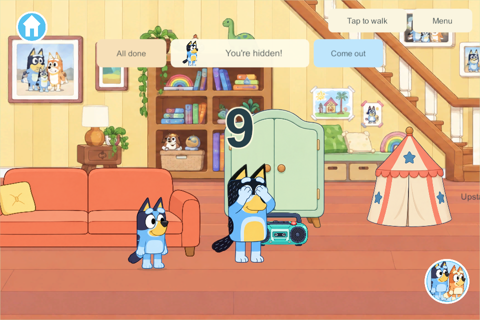
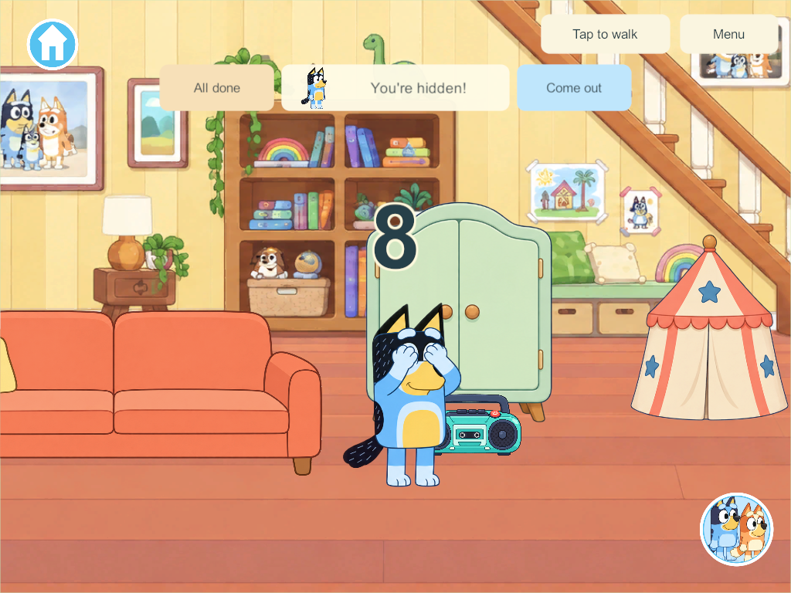

Current build plan · Editable source
First-level hide-and-seek — applied research and implementation
September 28, 2026. The user likes the first concept and requests four more hiding places, the whole first level, a large fifteen-to-one countdown, visible stops to look around, Bandit/Chilli taking turns, and a camera that follows the parent while each child is hidden. This is the active HIDE-01 / HIDE-03 / NPC-01 slice. The prior 20-second proposal is superseded. Four human players, independent participation, possessions and saves remain required.
Research used for this change
| Primary source | Applied decision | Boundary |
|---|---|---|
| Rich Welsh, Making NPCs Search Realistically, reviewed September 28 | Separate the visible reaction, travel, inspection and wider search. Maintain a set of checked cover points, prefer nearby unchecked places, and pause to glance along longer paths. | This family adaptation does not use the chapter's hidden-player-position weighting or combat behavior. |
| Brook Miles, NPC Awareness in a 2D Stealth Platformer, reviewed September 28 | Keep the searcher's remembered interests separate from live hidden occupants. Use authored cover locations as plausible interests; only a completed inspection reveals an occupant. | Looking animation alone is not a sight/hearing simulation. Optional observation/clue systems remain separate later work. |
| Unity NGO NetworkTime and ticks, reviewed September 28 | Authority advances the count, travel and pause clocks. Clients present the same parent, phase and facing from bounded activity samples. | This project retains its existing transport, save and recovery rules; no package upgrade. |
| Official Chilli reference | Preserve Chilli's recognizable adult red-heeler identity and palette in a matching sprite atlas. | Generated artwork remains a candidate for family visual acceptance. |
The fifteen seconds are the user's preference. Pause lengths, route weights and the search budget below are game tuning choices, not research-proven child-development values.
Concrete scope before implementation
- Ten spaces: keep the six living-room slots; add a folding screen by the science/coloring bay, a nook under the existing dining table, a blanket-covered garden bench, and a bush near the far shed. The dining table is reused with a local cutaway, not duplicated artwork.
- Whole first level: the connected
gardenarea from the science/coloring bay through the house, kitchen, veranda and backyard. Upstairs/bedrooms/secret rooms and other destinations remain outside this round; entering them withdraws only that player. - Fifteen-second personal preparation: large outlined 15-to-1 numbers appear over the play area without intercepting taps, then disappear when preparation finishes. Movement continues, unready children are protected, late joins do not reset anyone else.
- One parent per round: Bandit first, then Chilli, alternating from the persistent round number. No swap while a sibling is preparing or hiding. Found players can rejoin an ongoing round; once all have finished, the next game uses the other parent. Reopen releases stale roles but remembers whose turn is next.
- Readable search: count → stop/look left and right → walk → optional pause on a long stretch → inspect cover → friendly find or next place. A checked-point mask prevents repeat checks until all ten have been covered. Deterministic variation is based on round/pass/slot, never hidden positions.
- Fair, finite coverage: choose among unchecked authored points with distance, remaining-route length and a small deterministic variation. Record worst-case stationary coverage for every slot and both parents; tune the expanded route before calling it qualified. Nearby hiding spots receive no special treatment based on occupancy.
- Persistence: add the search memory fields with schema/content migration; accept existing schema-28 twenty-second records before suspending their transient roles. Preserve old slot IDs, all inventory, creations, rooms and enrollment.
- Presentation: parent portrait/name/count instruction match the current or next round, visible searching/looking status, natural facing changes, ten large pictured Hide buttons with a gentle glow, and a local camera that follows the seeker while each player is hidden. Preserve normal movement, kitchen/science access and the existing book rack.
Implementation and qualification
Candidate 227 uses schema 30, content 31. The earlier six slot IDs are unchanged. New slots are the folding screen at X -7040, the existing dining-table nook at -470, the blanket bench at 2910 and the bush at 4310. The foreground floor rail remains clear; scenery chunks do not control NPC simulation. All ten buttons use the same tap-and-approach interaction, local cutaways and safe Come out behavior.
The large outlined 15-to-1 countdown is displayed over the play area on phone and tablet layouts. It does not intercept movement or hiding taps and disappears when preparation finishes. Each Hide button is larger, shows a pictured cover, and has a calm pulsing amber outline. While a player is hidden, that player's camera follows the authoritative Bandit/Chilli position; finding, Come out, movement, travel or suspension returns the camera to that player. Other players keep their own independent cameras. The HUD keeps the parent portrait and safe-exit controls.
Bandit and Chilli alternate from the saved round number. The parent stands beside the starter to count. A child joining or re-hiding while a sibling is active keeps that parent; only the next complete round switches. Cold reopening releases transient roles and keeps the turn sequence. Schema-28 records can still contain the earlier twenty-second clocks before their safe migration.
The search records a checked-slot mask. Its next choice considers travel distance, the remaining first-level route and a small deterministic variation. It stops to look left/right before choosing another cover and during long walks. Facing, pause age, chosen cover, count and position come from server state. Finding still requires arrival and a completed inspection; pausing does not magically reveal occupants. This is a cover-search system, with sight/hearing and optional clues still future scope.
| Qualification | Result |
|---|---|
| Core | All 298 groups pass, including older saves, independent hiders, ten covers, parent turns, stationary looks and retained possessions. The fresh count-15 run passes the updated schema/migration checks. |
| Search budget | Fresh phase trace records the bounded parent route, pauses and cover inspections. This does not predict moving/re-hiding players. |
| Unity/native JSON | Fresh multiplayer evidence passes eight groups, and private solo evidence passes two. |
| Native private solo 227 | Two groups pass: pictured full loop, fifteen-second countdown, Chilli's second turn and safe reopen with toys, rooms and creations retained. |
| Native four-client authority 227 | Eight groups pass: pictured fifteen-second start, large Hide controls, parent-follow camera, four covers/sibling concealment, first-level search, independent leaving, possessions/avatars, lifecycle, cold restore, every cover button and a stationary long-walk look. |
| Release artifacts | Windows and signed Android 227 succeeded with schema 30/content 31 and zero build errors or warnings. The iPad 227 Xcode export is hash-verified on the paired Mac; native signing/install waits for connected iPads. |





The fresh 227 phase trace records the count, parent-follow camera, pauses, inspections and independent exits without exceptions or queue warnings.
Native visual review moved the bench clear of the resting balloon, lowered the dining-table occupant and separated the counting parent from the starter. Candidate 227 retains these corrections, adds the large countdown, enlarges and gently highlights each pictured Hide button, and follows the searching parent with each hidden player's local camera. New raster sources, the official Chilli reference and exact built-in imagegen prompts are in the art manifest. Chilli and the new props are generated candidates; the user accepted the earlier concept, not these new images yet.
The later user-requested Samsung update to 227 replaced 226 in place. Package, pinned signing identity and exact installed APK hash match; the captured Home launch shows Chilli, retained yard state, the parent HUD, Come out control and the family chooser. All 20 primary world saves and 20 backups remain; 19 of each are byte-identical. The active paired world and backup migrated schema 29 to 30 with all 118 toys and other durable world fields unchanged. Enrollment status and the book-audio record are unchanged. This visible launch does not establish full hide-and-seek or four-device acceptance. The live family server, Mac and iPads were not updated. Shared family play needs matching current client/server deployment. The parent-voice Windows policy block is unchanged: this version has visible counting and existing chimes, without newly generated parent speech. Production recovery, mixed physical-device play, A10 performance and the inherited Android 16 KB gate remain open. Native cold restart is not independent production-recovery qualification.
The matching unsigned iPad 227 Xcode export was built from the same source, its 3,103-file archive was hash-verified, and it is transferred to /Users/nayster/Developer/LittleWeeps/Builds/G3-0.0.227 on the paired Mac. devicectl currently reports the iPad 9 as available and paired; the iPad 7 is unavailable. No iPad install has been claimed or started. Once the devices are connected, the native signing/install scripts can use this verified export without rebuilding the game content.
The next hide-and-seek work is optional sight/sound clues, richer parent behavior and separately qualified upstairs routes. Full everyday parent routines and human-seeker roles remain in the Home backlog. Preserve the branch integration hold.